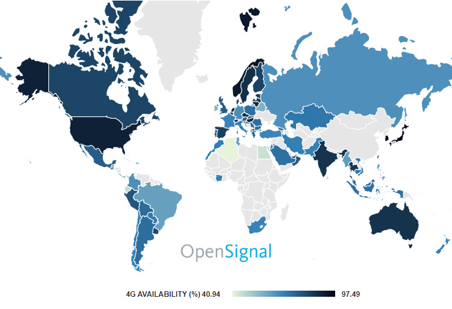
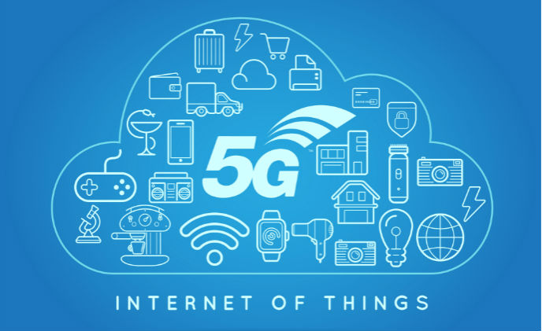
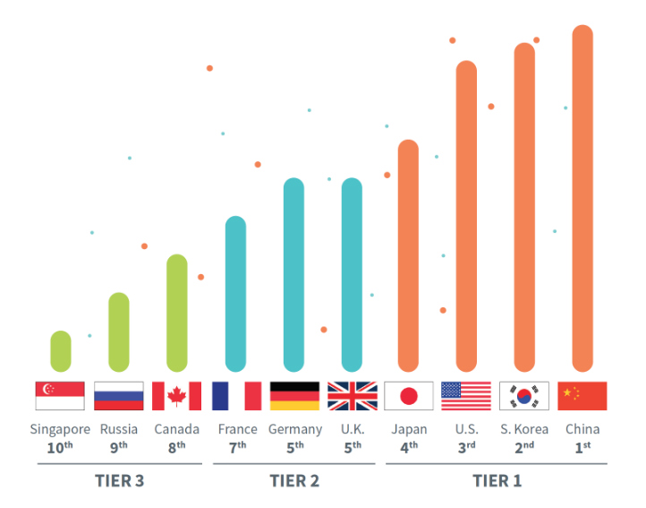

5G in Developing Countries
The addition of Millimeter Wave technology, as well as sleep mode optimizations and other significant improvements aimed to reduce power consumption, mean 5G can be deployed in 3rd-world countries as well. Given that the overwhelming majority of 3rd-world countries don't yet have access to LTE technology, the security, speed, and most importantly reliability of 5G will be a significant improvement to developing countries.

Internet of Things
The introduction of 5G into developing countries opens up new opportunites for technology we take for granted, like the Internet of Things (IoT). The Internet of Things is the connection and networking of everyday objects, also called "smart" devices (smart cars, smart TVs, and smart homes, to name a few). The IoT is currently carried mainly by LAN networks, in the case of smart home devices, or 4G, in the case of smart cars and similar technology. While these networks work well enough for now, 5G was designed with the IoT in mind. It will likely be the main technology supporting the IoT in the future, as the incredibly high speeds and record-breaking low latency make for the perfect network to connect smart devices.

The Race to 5G
Of course, 5G is not aimed solely at developing countries. It will undoubtedly be put to incredible use here at home and in other 1st-world countries. In fact, in the race to develop 5G technology, the US actually places third, behind China and South Korea. Beyond that, there are about a dozen other countries racing to develop 5G. Hopefully, the competition will inspire each country to develop the technology faster.
